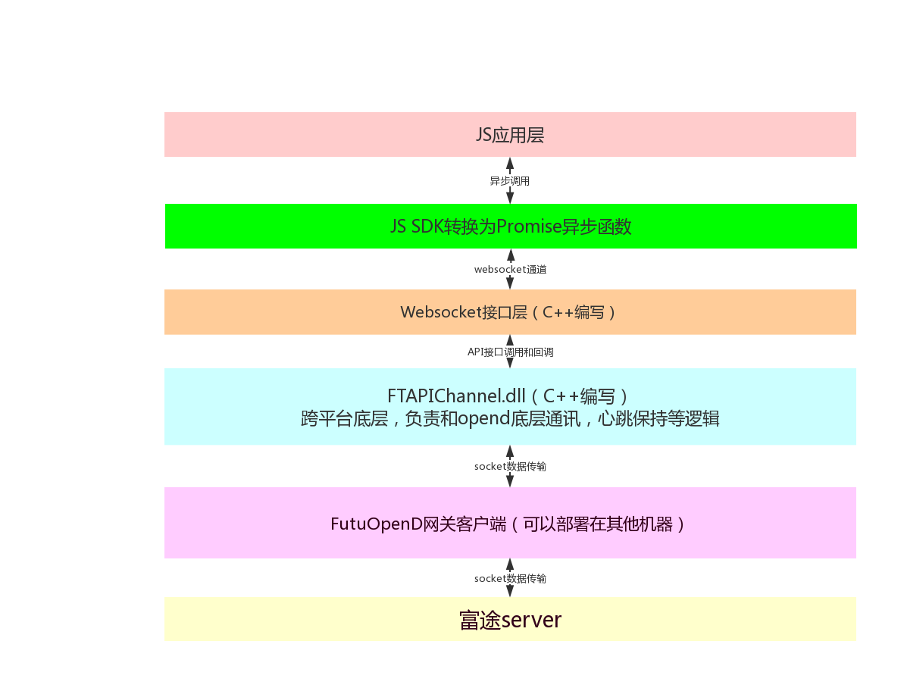

介绍¶
JavaScript WebSocket API简介¶
- JavaScript WebSocket API依赖FutuOpenD网关客户端，需要先运行登录 FutuOpenD , 并且在xml里面配置websocket_port选择。
- Sample提供了几个简单的行情和交易获取demo，可以用于上手学习。
- 具体支持交易和行情品种参考FutuOpenD网关客户端简介
- 下载地址: 暂时请到FUTU OPEN API的QQ开发群里下载（108534288，229850364）
接口框架¶

- 为了保证性能最大，我们的中间层采用C++编写，然后提供JavaScript接口调用层
代码结构¶
|-- js
| | |-- proto pb自动生成文件，用于组包解包pb。
| | |-- components
| | | |-- ft-websocket
| | | | |-- main.js
| | | | |-- base.js
调用须知¶
- 所有接口以异步回调方式完成